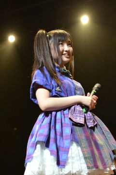
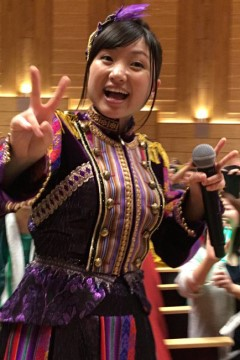
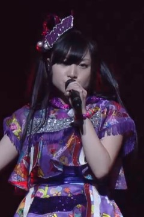

埼玉縣
西元1995年3月15日出生 （歲）
A型 雙魚座 亥豬
1995年加入キャロット
2004年開始扮演【フジテレビ「ポンキッキーズ21」】的【シスターラビッツ．モモカ】，2015年【T-SPOOK ～TOKYO HALLOWEEN PARTY～】再次飾演
2007年進行聲帶結節手術
2008年加入星塵傳播
2009年加入團體【PowerAge】
2009年7月26日桃色幸運草於【東京．石丸ソフト本店】的【スタ☆フェス vol.006】加入成員，並以紙箱裝箱登場
【words of the mind -brandnew journey-】向【Michael Jackson】致敬的經典橋段：手套配備與月球漫步演出，為2009年【SDP Bunko ☆百田夏菜子．早見朱莉簽名會☆（SDP Bunko ☆百田夏菜子．早見朱莉サイン会イベント☆）】時佐佐木彩夏在最後戴著黑帽子扮演【阿玲．Jackson】，隨著【Billie Jean】BGM將手套交給了有安杏果埋下伏筆
2009年【山田電機Presents ～桃色幸運草JAPAN Tour 2009 桃色Typhooooon！～（ヤマダ電機Presents ～ももいろクローバーJAPANツアー 2009 ももいろTyphooooon！～）】在【北海道．テックランド札幌本店】開始在【words of the mind -brandnew journey-】時將手套丟向觀眾
2009年09月20日【桃色幸運草 CHAMPION CARNIVAL AKBA 5DAYS（ももいろクローバー CHAMPION CARNIVAL AKBA 5DAYS）】決定了永遠的代表色
2009年【AKBA桃草大型運動鑑測對抗賽 ～鄰里最強～（AKBAももクロ対抗大運動測定会 ～そして路地裏へ～）】與玉井詩織和佐佐木彩夏倒數三人組成【運動音痴組（うんちっちーず）】
2010年於【福井．鯖江市】宣傳眼鏡工藝，後續享用鱒魚壽司的事件成為與玉井詩織、高城蕾妮【鱒魚壽司來三份（マス寿司三人前）】團隊名稱由來，2012年【桃草春季幹大事 2012 橫濱體育館 怎麼會有2DAYS（ももクロ春の一大事 2012 横浜アリーナ まさかの2DAYS）】以【梅麗莎（メリッサ）】登場
2010年3月中學畢業
2011年於【東京．神田明神】參與【神田明神「七夕祭」短冊奉納】活動全員畫了一臉熊貓妝
2011年由日本文化廳舉辦【文化庁メディア芸術祭 ドルトムント展 2011】遠征【德國．多特蒙德．Borussia Dortmund】
2011年【LOUD PARK 11】樂團【ANIMETAL USA】合作曲目【マジンガーZ】，並畫了一臉致敬傳奇搖滾樂團【KISS】妝登場
2011年【2011 プロレスLOVE in 両国 vol.13】以覆面造型自稱【GREAT幸運草Z】登場，之後除了畫了一臉摔角彩繪外，還有一段噴毒霧表演
2011年【桃草女子祭典 2011（ももクロ女祭り 2011）】嗓子出現狀況，之後經過其他成員協助與粉絲的鼓勵下完成全部表演
2011年【NHK「MUSIC JAPAN」】單元【アイドル関ヶ原○×クイズ大会】由有安杏果一人獲得全偶像最終勝利
2012年於【東京．六本木ヒルズ】參與【夢見るMyマイメロディ展】活動，設計專屬的【マイメロディ】
2012年【桃草春季幹大事 2012 橫濱體育館 怎麼會有2DAYS（ももクロ春の一大事 2012 横浜アリーナ まさかの2DAYS）】與高城蕾妮組成【事務所請幫推小隊（事務所に推され隊）】
2012年由馬來西亞青年及體育部舉辦【National Youth Day Celebration（HARI BELIA NEGARA 2012）】遠征【馬來西亞．布城】，並與馬來西亞首相【Najib Razak】握手與交流
2012年團體擔任【長崎クローバー大使】
2012年【桃草男子祭典 2012 -Dynamism-（ももクロ男祭り 2012 -Dynamism-）】曲目【椰子☆暑期（ココ☆ナツ）】發生斜坡跌倒事件
2012年團體【第25回 2012 小学館DIMEトレンド大賞】中的【話題の人物賞】受獎
2012年節目【NHK Eテレ「青山ワンセグ開発」】被佐佐木彩夏強制組成【阿玲有安（あーりんやす）】
2013年1月專心喉嚨治療至3月解禁
2013年團體【第13回 ビートたけしのエンタテインメント賞】中的【日本芸能大賞】受獎
2013年3月高校畢業
2013年【Ustream「Ustream大賞受獎紀念 24小時我就不客氣啦TV（Ustream大賞受賞記念 24時間いただきますっTV）」】演唱活動【第一次換色挑戰】：【紫】
2013年於【千葉．袖ケ浦海浜公園】舉辦【氣志團万博 2013 ～房総爆音梁山泊～】，【森山直太朗】被【千年殺】攻擊
2013年團體獲得【MTV Japan】舉辦的【2013 MTV Europe Music Awards】中的【Best Japanese Act】
2013年【テレビ朝日「MUSIC STATION SUPER LIVE 2013」】節目結尾不明顯的【換色番外篇】：【粉】
2014年【3B junior LIVE FINAL "俺の藤井" 2014】與【（前私立恵比寿中学）柏木ひなた】【（前チームしゃちほこ）伊藤千由李】組成【天婦羅花三重奏（てんかすトリオ）】
2014年【個推曼哈頓♡ ～我的老天鵝～（おしいろマンハッタン♡ ～なんてこったパンナコッタ～）】演唱活動【第二次換色挑戰】：【粉】
2014年3月15日於【東京．国立競技場】舉辦【桃草春季幹大事 2014 國立競技場大會 ～NEVER ENDING ADVENTURE 迎向夢想彼端～（ももクロ春の一大事 2014 国立競技場大会 ～NEVER ENDING ADVENTURE 夢の向こうへ～）】接受大家特別慶生
2014年【フジテレビ「FNS歌謡祭」】與前輩【（前かぐや姫）南こうせつ】【（前かぐや姫）伊勢正三】、妹團【私立恵比寿中学】【チームしゃちほこ】合作曲目【七彩星塵（七色のスターダスト）】，前輩【（前かぐや姫）伊勢正三】成為被臉頰KISS目標之一
2014年團體擔任國際巨星【Lady Gaga】暖場演唱【LADY GAGA'S artRAVE：the ARTPOP ball】
2014年接受來自桃草武士【田中将大】的ALS冰桶挑戰，與玉井詩織、高城蕾妮成為執行成員之一
2014年12月年末流行性感冒暫停活動，缺席【NHK「第65回 NHK紅白歌合戦」】
2015年1月成人式
2015年3月桃草節目【フジテレビNEXT「坂崎幸之助的桃色民歌村NEXT（坂崎幸之助のももいろフォーク村NEXT）」】出現精神不穩的狀況，因為是現場播放直接呈現在觀眾面前，也令粉絲十分擔心
2015年書籍【週刊ビッグコミックスピリッツ 22．23合併号】與【（私立恵比寿中学）安本彩花】【（前私立恵比寿中学）廣田あいか】【（チームしゃちほこ）坂本遥奈】組成【四葉草小隊（チームよつば）】
2015年參與【Anime Expo 2015】遠征【美國．洛杉磯．Los Angeles Convention Center、美國．洛杉磯．Microsoft Theater】
2015年【テレ朝動画「川上アキラの人のふんどしでひとりふんどし」】桃草節目【換色番外篇】：【紫】
2015年【フジテレビ「FNS歌謡祭」】與【（THE ALFEE）高見沢俊彦】合作曲目【CHA-LA HEAD-CHA-LA】完美詮釋【餃子】登場
2015年【Ustream「桃草24time TV in 滿足（ももクロ24time TV in アータン）」】網路直播與百田夏菜子、玉井詩織公開飲啤酒解禁
2015年12月於直播【Ustream「巨蛋Tour 門票販售紀念 與2張專輯明年也一起上SP（ドームツアー チケット発売記念 アルバムも来年2枚同時にでちゃうよスペシャル）」】扁桃腺切除報告
2015年節目【NHK BSプレミアム「あなたに贈る！」】與【秦基博】同台圓夢並告白
2016年團體獲得【国際宝飾展】舉辦的【第27回 日本ジュエリーベストドレッサー賞】中的【特別賞】
2016年由日本與越南政府合作舉辦【さくら祭り 2016】遠征【越南．下龍市、越南．李太祖廣場】
2016年衣錦還鄉擔任【富士見市PR大使】
2016年【實地勘查 ～桃草大談～ vol.1 山形（ロケハン ～ももクロおおいにかたる～ vol.1 山形）】演唱活動【換色番外篇】：【紫】
2016年於【神奈川．横浜アリーナ】舉辦【心之旋律 ～feel a heartbeat～ Vol.0（ココロノセンリツ ～feel a heartbeat～ Vol.0）】為本人首場官方個人演唱活動
2016年參與【Bilibili Macro Link 2016】遠征【中國．上海．梅賽德斯-奔馳文化中心】
2016年【GIRLS' FACTORY 16】活動【換色番外篇】：【藍】
2016年遠征【美國．檀香山．The Republik、美國．洛杉磯．The Wiltern、美國．紐約．PlayStation Theater】舉辦【アメリカ横断ウルトラライブ】演唱活動
2017年3月大學【日本大学芸術学部写真学科】畢業，獲得【芸術学部長特別表彰】與畢業作品【心之旋律（心の旋律）】獲得【写真学科奨励賞】
2017年【AbemaTV 1st ANNIVERSARY LIVE】演唱活動【第三次換色挑戰】：【紫】
2003年參與【林明日香】單曲【小さきもの】MV演出
2005年參與【SMAP】單曲【友だちへ ～Say What You Will～】MV演出
2008年參與【EXILE】單曲 【銀河鉄道 999】YT 【Choo Choo Train】YT MV演出
2010年與玉井詩織、佐佐木彩夏擔任書籍【オタポケ 10月号】封面拍攝
2010年團體擔任書籍【HMV店頭誌】【the music & movie master 215】【スーパーエンタメ新聞アニカンR Vol.80】【ネクストブレイクアイドル No.1】封面拍攝
2010年團體擔任書籍【週刊少年サンデー No.49】封面拍攝之一
2010年團體擔任書籍【B.L.T. U-17 Vol.16】封面拍攝版本之一
2011年團體擔任書籍【VOICHA！Vol.13】【スーパーエンタメ新聞アニカンR Vol.102】【週刊少年サンデー No.21】【スーパーエンタメ新聞アニカンR Vol.125】【ミューズクリップ】封面拍攝
2011年團體擔任書籍【TV Bros. 4月2日号】封面拍攝之一
2011年團體擔任書籍【CD Journal 8月号】【Cool-up IDOL 9月号】【サマー．アイドル7 2011 SUMMER】【スーパーエンタメ新聞アニカンR Vol.141】【楽遊 vol.22】封面拍攝
2011年團體擔任書籍【POP'nアイドル！】【bounce 334号】封面拍攝版本之一
2011年團體擔任書籍【B.L.T. U-17 Vol.20】【Top Yell 10月号】【Top Yell 1月号】【週刊ヤングジャンプ No.43】【週刊少年マガジン No.53】封面拍攝
2011年團體擔任書籍【週刊SPA！1月3．10合併号】【Quick Japan Vol.95】封面拍攝
2011年團體擔任書籍【J-POP GIRLS キュン！】【JUNON 11月号】【デジモノステーション 11月号】【CM NOW VOL.153】【DOMMUNE OFFICIAL GUIDE BOOK 2】封面拍攝之一
2012年團體擔任書籍【J-POP GIRLS キュン！vol.2】【月刊少年ライバル 4月号】【月刊少年ライバル 5月号】【HARAJUKU】【CM美少女U-19 SELECTION 100 2012】封面拍攝之一
2012年團體擔任書籍【月刊スカパー！2月号】【月刊少年ライバル 3月号】【Top Yell 3月号】【月刊HMV 3月号】【FREECELL 特別号】封面拍攝
2012年生日紀念商品：工作手套組合
2012年團體擔任書籍【週刊ヤングジャンプ No.15】【オリ☆スタ 3月19日号】【月刊ヤングマガジン No.4】【GIRL POP 2012 SPRING】【FREECELL 特別号 5】封面拍攝
2012年團體擔任書籍【Top Yell 6月号】【スカパー！TVガイド 6月号】【SWIMMER Ready Go！！スイマー&チョコホリック】【日経エンタテインメント！7月号】【Quick Japan Vol.102】封面拍攝
2012年團體擔任書籍【MARQUEE vol.91】【ch FILES 7月号】【MUSIC MAGAZINE 7月号】【Campus Walker】【風とロック 6月号】封面拍攝
2012年團體擔任書籍【日経TRENDY 7月号】【別冊少年マガジン 8月号】【週刊少年マガジン No.33】【花とゆめ 16号】【週刊少年マガジン No.35】封面拍攝之一
2012年團體擔任書籍【週刊ヤングジャンプ No.30】封面拍攝版本之一
2012年團體擔任書籍【週刊プレイボーイ No.29】【週刊少年マガジン No.34】【ニッポン放送タイムテーブル 8．9月号】【週刊ヤングジャンプ No.36】【月刊少年ライバル 9月号】封面拍攝
2012年擔任書籍【月刊少年ライバル 8月号】封面拍攝之一
2012年團體擔任【しまむら】模特兒
2012年擔任書籍【Goo Bike 8/20号】【B.L.T.九州版 1月号】封面拍攝
2012年團體擔任書籍【B.L.T. PLUS VOL.4】【Top Yell 10月号】【De☆View 11月号】【週刊ビッグコミックスピリッツ 47号】【週刊少年マガジン No.50】封面拍攝
2012年團體擔任書籍【あえるアイドル大百科】【MUSIC MAGAZINE 増刊 アイドル．ソング．クロニクル 2002-2012】【月刊少年ライバル 10月号】【グループアイドル全力応援SPECIAL】【東京かわら版 467号】封面拍攝之一
2012年團體擔任書籍【Top Yell 12月号】【小学一年生 1月号】【月刊少年ライバル 1月号】【BREAK MAX 2月号】封面拍攝之一
2012年團體擔任書籍【Tokyo Walker 11月30日号】【Yokhama Walker 11月27日号】【Kansai Walker 11月27日号】【Tokai Walker 11月27日号】【BREAK MAX 1月号】封面拍攝
2012年團體擔任書籍【北海道 Walker 冬号】【ミューズクリップ】【週刊ヤングマガジン No.52】【MUSIC Fun Live Information Magazine FUN Vol.10】【日経エンタテインメント！1月号】封面拍攝
2012年團體擔任書籍【B.L.T. 2月号】【週刊ビッグコミックスピリッツ 4．5合併号】【NYLON JAPAN 2月号】【月刊少年ライバル 2月号】封面拍攝
2013年團體擔任書籍【BREAK MAX 3月号】【BREAK MAX 4月号】【月刊少年ライバル 3月号】【月刊コミックゼノン 4月号】【MEN'S NON-NO 6月号】封面拍攝之一
2013年團體擔任書籍【オリ☆スタ 1月28日号】【NHKウィークリーステラ 2/8号】【あそびーくる】【bea's up 4月号】【smart 5月号】封面拍攝
2013年生日紀念商品：筆記本組合
2013年擔任書籍【B.L.T.福岡．広島版 5月号】【B.L.T.福岡．広島版 11月号】封面拍攝
2013年團體擔任書籍【週刊プレイボーイ No.14】【SHUTTER magazine Vol.8】【週刊ビッグコミックスピリッツ 18号】【月刊Audition 5月号】【the music & movie master 243】封面拍攝
2013年團體擔任書籍【MUSIC MAGAZINE 5月号】【週刊ヤングジャンプ No.21．22】【OMOSAN STREET 25号】【週刊プレイボーイ No.20】【S Cawaii！ 6月号】封面拍攝
2013年團體擔任書籍【Seventeen 6月号】【マーガレット No.11】【Quick Japan Vol.111】【NHKウィークリーステラ 1/3号】【JUNON 2月号】封面拍攝版本之一
2013年團體擔任書籍【日経エンタテインメント！8月号】【週刊ヤングマガジン No.35】【週刊少年サンデー No.35】【Soup. 12月号】【週刊ビッグコミックスピリッツ 49号】封面拍攝
2013年與玉井詩織、佐佐木彩夏、高城蕾妮擔任書籍【週刊ビッグコミックスピリッツ 36．37合併号】封面拍攝
2013年團體擔任書籍【週刊ヤングマガジン No.49】【週刊SPA！11月12日号】【週刊プレイボーイ No.46】【音楽と人 12月号】【週刊少年マガジン No.49】封面拍攝
2013年團體擔任書籍【ザテレビジョン日本生命版 12/20号】【テレビ31日本生命版 1/3号】【B.L.T. 2月号】封面拍攝
2014年生日紀念商品：耳罩式耳機組合
2014年團體擔任書籍【日経エンタテインメント！3月号】【週刊ビッグコミックスピリッツ 18号】【週刊少年マガジン No.23】【風とロックと写真】【週刊Vetter No.189】封面拍攝
2014年團體擔任書籍【WEEKLY WiSE No.390】【Tokyo Walker 5月2日号】【Kansai Walker 5月2日号】【福岡 Walker 5月号】【Tokai Walker 5月号】封面拍攝之一
2014年團體擔任書籍【エンタミクス 号外「悪夢ちゃん The 夢ovie 6年2組 夢見帳」】【月刊少年ライバル 6月号】【悪夢ちゃん 夢のつづき編】【週刊ビッグコミックスピリッツ 24号】【月刊大人ザテレビジョン 10月号】封面拍攝之一
2014年團體擔任書籍【週刊ビッグコミックスピリッツ 39号】【B.L.T. 2月号】封面拍攝
2014年團體參與【さだまさし】單曲 【君は歌うことが出来る】YT MV演出
2014年擔任書籍【Quick Japan Vol.116】封面拍攝
2015年擔任書籍【週刊ビッグコミックスピリッツ 7号】【週刊ビッグコミックスピリッツ 22．23合併号】封面拍攝之一
2015年團體擔任書籍【週刊ビッグコミックスピリッツ 8号】【スカパー！TVガイドBS＋CS 2月号】【週刊SPA！2月10．17合併号】【日経エンタテインメント！3月号】【別冊FLIX Vol.2】封面拍攝
2015年團體擔任書籍【GO！GO！GUITAR 3月号】封面拍攝之一
2015年團體擔任書籍【帷幕升起（幕が上がる）】【TV LIFE 2/27号】封面拍攝版本之一
2015年團體擔任書籍【HR 3．4月号】【読売ファミリー 2月12日号】【PICT-UP 93】【キネマ旬報 No.1683】【週刊ビッグコミックスピリッツ 13号】封面拍攝
2015年生日紀念商品：肚圍與鑰匙圈組合
2015年團體擔任書籍【ジュニアエラ 5月号】【AERA 4月27日号】【別冊FLIX plus Vol.1】【シアターガイド 6月号】【演劇ぶっく 6月号】封面拍攝
2015年團體擔任書籍【B.L.T. 11月号】【月刊e-みる 12月号】【Quick Japan Vol.123】【＋act. 1月号】封面拍攝
2016年團體擔任書籍【FLEEK 1月号】【KEP 2月号】【TOKYO FM 2月号】【7ぴあ 2月号】【the music & movie master 276】封面拍攝
2016年團體擔任書籍【日経エンタテインメント！3月号】【ミューズクリップ】【TV Bros. 2月13日号】【Va Vol.163】【MUSIC MAGAZINE 3月号】封面拍攝
2016年生日紀念商品：有安杏果人偶組合
2016年團體擔任書籍【SWITCH 3月号】【WEEKLY WiSE No.493】【週刊Vetter No.269】【OVERTURE No.009】封面拍攝
2016年團體擔任書籍【週刊ビッグコミックスピリッツ 35周年記念コラボグラビアMOOK】【NHKみんなのうた 10．11月号】【GO！GO！GUITAR 2月号】封面拍攝之一
2016年擔任書籍【太宰府自慢 第五号（限定帯付き）】封面拍攝
2016年擔任書籍【広報ふじみ 6月号】封面拍攝之一
2017年團體擔任書籍【広報ふじみ 3月号】封面拍攝
2017年團體擔任書籍【たのしい幼稚園 4月号】【小一教育技術 4月号】封面拍攝之一
2017年生日紀念商品：鬧鐘組合
2017年擔任書籍【週刊Vetter No.325】封面拍攝
【美少女戦士セーラームーン -La Reconquista-】【吉本新喜劇】
【帷幕升起（幕が上がる）】
【読売テレビ「フレンチポテトカップ」】【日本テレビ「親父」「悪夢ちゃん スペシャル」】【フジテレビ「ヘンボカセヨ ～幸せになれよ～」「奥様は警視総監」】【テレビ朝日「はぐれ刑事純情派 第15シリーズ」】【MBS「がきんちょ～リターン．キッズ～の秘密」】
【NHK Eテレ「青山ワンセグ開発 僕にはまだ友だちがいない」】【テレビ東京「ウレロ☆未完成少女」】【NHK BSプレミアム「伝七捕物帳」】
【テレ朝動画「桃子連續劇（ももドラ）」】【NHK「天使JUMP（天使とジャンプ）」】
【岸和田少年愚連隊 Going My Way】【銀のエンゼル】【市民ポリス69】【モテキ】【NINIFUNI】
【白瞳（シロメ）】【帷幕升起（幕が上がる）】
【サンマとカタール ～女川つながる人々】
【明治乳業】【ジャストシステム】【TOMY】【P&G】【伊藤洋華堂】【カルカンデリカスタイル】【Panasonic】【味滋康】【SEGA TOYS】【AEON】【小林製藥】【麥當勞】【SUZUKI】
【エスビー食品】【資生堂】【任天堂】【王子ネピア】【デル．プラド】【丸美屋】【好侍食品】【大和房屋工業】【東邦燃氣】【コルゲンコーワ】【三菱電機】【東京JOYPOLIS】
【康寶】【桃屋】【LOTTE】【TAKARA TOMY】【百事可樂】【FamilyMart】【萬代南夢宮娛樂】【スカパー！】【參天製藥】【comico】【米久】【AEON MALL】
【かよえ！チュー学】【猛烈宇宙海賊】【めざましテレビ 紙兎ロペ】【七龍珠Z 復活的「F」】
【フジテレビ「ポンキッキーズ21」「めちゃ2イケてるッ！」「めざましテレビ」「ミューサタ」「魁！音楽番付 Eight」「笑っていいとも！」「HEY！HEY！HEY！」「ネプリーグ」「MUSIC FAIR」「新堂本兄弟」「はねるのトびら」「めざにゅ～」「知りたがり！」「とくダネ！」「ホンマでっか！？TV」】
【フジテレビ「ノンストップ！」「めざましどようび」「ユメノハシラ」「志村けんのバカ殿様」「ドリフ大爆笑35周年人気スターが選んだ爆笑コント20」「VS嵐」「Mr.サンデー」「FNS歌謡祭」「僕らの音楽」「ニュースJAPAN」「ハモネプリーグ」「TOKIOカケル」「プレミアの巣窟」「音楽の時間 〜MUSIC HOUR〜」】
【フジテレビ「FNS27時間テレビ」「FNNスーパーニュース」「すぽると！」「20周年めざましテレビ夜の大同窓会！ウラ側すべて見せます＆超豪華じゃんけん祭り」「とんねるずのみなさんのおかげでした」「FNNスピーク」「みちのくSLギャラクシー THE NEW EAST EXPRESS」「FNS 正月だよ！オールハワイナイトフジ 2015」】
【フジテレビ「水曜歌謡祭」「次ナルTV」「KinKi Kidsのブンブブーン」「魁！音楽番付 Eight」「今年もきました！FNS歌謡祭事前スペシャル」「Love music」「魁！ミュージック」「FNS歌謡祭事前特番」「みんなのニュース」】
【SMOOCH.TV「Pretty Women！in ebis」】【スカパー！「GIRLS POP NEXT」「アイドル"独断と偏見"情報局」「スカパー！アワード 2012 授賞式」「スカパー！音楽祭」】【長崎放送「報道センターNBC」】【高知さんさんテレビ「サタ★マガ」】
【スカパー！AT-X「Club AT-X だぶるあ～る」】【全国音楽情報TV番組「MUSIC B.B.」】【東海テレビ「バナナマンのブログ刑事」「まるナツ 美浜海遊祭LIVE ～MUSIC WAVE 2011～」】【仙台放送「あらあらかしこ」】【BS朝日「コサキンDEラジオ！」「J-POPマンデー」「極上空間」「歌っていいだろう」】
【ニコニコ生放送「電波研究社 ～アニメ．ゲーム．アニソン～」「ミュージックボンバー」「劇団ひとり、バカリズム、東京03と一緒に『ウレロ☆未完成少女』最終回を見よう！」「セーラームーン20周年記念イベント」「イナズマロック フェス 2016 DAY1 出演アーティストMV特集」】
【スペースシャワーTV「爆裂★エレキングダム！！」「NEW CUTS」「BIG HITS！」「オールナイトニッポン45周年感謝祭 ALL LIVE NIPPON」「SPACE SHOWER MUSIC VIDEO AWARDS」「CDショップ大賞 スペシャルLIVE」「音楽ヒミツ情報機関 MI6」「JET」「2013年の主役が勢ぞろい！大人気アーティストスペシャル」】
【Ustream「TAMASHII NATION 2011 前夜祭スペシャル放送」「Ustream大賞」】【BS11「秋葉系アイドルチャンネル」】【青森朝日放送「○っと！」】【福岡放送「めんたいワイド」「ナイトシャッフル」「バリはやッ！」「ナイトシャッフルG」】
【フジテレビNEXT「綾小路翔の六本木バナナボーイズ」「あたしの音楽」「きくちから」】【MUSIC ON！TV「Artist File」「サキドリ！」】【岩手めんこいテレビ「はちきゅん」「mitスーパーニュース」】
【日本テレビ「おもいッきりDON！」「スッキリ」「PON！」「ズームイン！！サタデー」「アイドルちん」「iCon」「ハッピーMusic」「しゃべくり007」「ダウンタウンDX」「宝探しアドベンチャー 謎解きバトルTORE！」「世界まる見え！テレビ特捜部」「シューイチ」「人生が変わる1分間の深イイ話」「メレンゲの気持ち」】
【日本テレビ「ロンブー&チュートの芸能人ヒットソングで爆笑ショーバトル！」「スター☆ドラフト会議」「1億人の大質問！？笑ってコラえて！」「Oha！4」「ZIP！」「天才！志村どうぶつ園」「おしゃれイズム」「Music Lovers」「AKBINGO！」「月曜よる9時はショーバト」「news every.」「元日は、TOKIO × 嵐」】
【日本テレビ「さんま&所の大河バラエティ！超近現代史！人間は相変わらずアホか！？」「1番ソングSHOW」「news zero」「ミュージックドラゴン」「Ozzfest Japan 2013 日本首次登場！桃色幸運草Z緊急參戰！！（オズフェスジャパン 2013 日本初上陸！ももいろクローバーZ緊急参戦！！）」「ヒルナンデス！」】
【日本テレビ「うわっ！ダマされた大賞」「東京暇人」「快脳！マジかるハテナ」「サンバリュ」「超直前！日本一テレビ ～歌唱王．ワラチャン．リアルロボットバトル．頭脳王～」「キユーピー3分クッキング」「誰だって波瀾爆笑」「真相報道バンキシャ！」「行列のできる法律相談所」「嵐にしやがれ傑作選」】
【日本テレビ「高校生クイズがついに開幕！地区大会を突破しアメリカを目指せSP」「第34回 全国高等学校クイズ選手権」「リアルロボットバトル日本一決定戦！本番まで待てない見所SP」「ロボット日本一決定戦！リアルロボットバトルナビ」「新春恒例！ポシュレオールスター初売りSP！！」「笑神様は突然に…」】
【日本テレビ「日本アカデミー賞授賞式」「Good Night フールー」】
【WOWOW「戦慄のメタル．オールナイト」「映画工房」】【NHK BSプレミアム「J-MELO」「音楽熱帯夜」「グレートトラバース」「あなたに贈る！」「みんなDEどーもくん！」「BS先取り情報」「伝七捕物帳が楽しくなる 大江戸タイムトラベル」】
【TBS「イチオシ！さよならシュレック！山里亮太のブサイクだって幸せになれる SP」「ライブB♪」「カミスン！」「サンデージャポン」「情報7days ニュースキャスター」「TBS24時」「はなまるマーケット」「情熱大陸」「COUNT DOWN TV」「アッコにおまかせ！」「ひみつの嵐ちゃん！」「エン活！」】
【TBS「爆報！THE フライデー vs サンデージャポン！！」「音楽の日」「みのもんたの朝ズバッ！」「Nスタ」「緊急生中継！さよなら国立競技場」「あさチャン！」「はやチャン！」「王様のブランチ」「A-Studio」「はやドキ！」「日立 世界ふしぎ発見！」「どうぶつ奇想天外！」】
【テレビ東京「ピラメキーノ」「ゴッドタン」「ポケモンスマッシュ！」「祝15周年！ポケモン映画名シーン超ランキングスペシャル！！」「JAPAN COUNTDOWN」「Crossroad」「出没！アド街ック天国」】【スペースシャワーTV Plus「ヘビロテ！」「ザ．プロデューサーズ -前山田健一-」】【RKB毎日放送「今日感テレビ」】
【テレビ朝日「FUTURE TRACKS→R」「さきっちょ☆」「見逃しチャンネル」「やじうまテレビ！」「お願い！ランキング」「今すぐ観たい！テレ朝動画アイドル SP」「おかずのクッキング」「MUSIC STATION」「ミニステ」「徹子の部屋」「CSテレ朝ナビ！！」「ブラマヨとゆかいな仲間たちアツアツっ！」】
【テレビ朝日「夏目と右腕」「ワールドプロレスリング」「モーニングバード！」「グッド！モーニング」「題名のない音楽会」「EXシアター特番」「ゴーちゃん。GIRL'S TV」「ナニコレ珍百景」「ポータル ANNニュース&スポーツ」「スーパーJチャンネル」「Mステ10時間SPウルトラFES」】
【テレビ朝日「ゴン中山&ザキヤマのキリトルTV」「関ジャム 完全燃SHOW」】
【NHK「MUSIC JAPAN」「J-MELO」「大科学実験」「スタジオパークからこんにちは」「もうすぐ9時プレマップ」「ミニ番組」「秋ナビ」「地球イチバン」「紅白歌合戦 初出場歌手PR」「NHK紅白歌合戦」「しあわせニュース」「NHK NEWS おはよう日本」「NHK福祉大相撲」「あほやねん！すきやねん！」「目撃！日本列島」】
【NHK「みんなをつなぐ魔法のメロディー」「土曜スタジオパーク」「コレ見て！ムービー」「毎日PR！紅白」「今夜も生でさだまさし」「NHKのど自慢」「国民総参加クイズSHOW！QB47」「明日へ」「あさイチ」「ジョシおん！ ～大好き♡東北ガールズライブ～」「ニュース シブ5時」「うたコン」】
【関西テレビ「ミュージャック」「さんまのまんま」「臨時発売！さんまのまんま大全集」「ピーチケ＋」「めざせ甲子園！つかたこレインボーロード」「まりえのMOVIE！GO！」「みんなのニュース ワンダー」「超えろ！ハットリくんとなつみ先輩」】
【読売テレビ「たかじんのそこまで言って委員会」「朝生ワイド す．またん！」「キューン！」「ウェークアップ」】【毎日放送「ちちんぷいぷい」「せやねん！」「MUSIC EDGE + OsakaStyle」「痛快！明石家電視台」「せやねん！」「MBS SONG TOWN」「絶対行きたい！イナズマロック フェスで、オールOK！」「ENT」】
【札幌テレビ「どさんこワイド179」「どさんこワイド朝」】【CS「MTV」】【テレビ埼玉「THE BEAT TIME」「玉ニュータウン」「ごごたま」「HOT WAVE」「V-Clips」「マチコミ」】【南日本放送「てゲてゲ」「ズバッと！鹿児島」】【熊本朝日放送「くまパワ」】【NHK甲府放送局「まるごと山梨」】
【CBCテレビ「来る来るミラクル」「花咲かタイムズ」「ゴゴスマ ～GOGO！Smile！～」】【新潟放送「水曜見ナイト」】【山形放送「ピヨ卵ワイド」】【宮崎放送「MRTニュース Next」「わけもん！GT」】【北海道テレビ「イチオシ！モーニング」「イチオシ！」「ワクワク、はじまる。」】
【びわ湖放送「キラりん滋賀」】【テレ朝動画「川上アキラの人のふんどしでひとりふんどし」「東京女子流 mei's ＊ ダンササイズスタジオ」】【テレビ静岡「情報ワイド てっぺん静岡」】【北海道放送「グッチーの今日ドキッ！」】【BS-TBS「サキドリ！」】【三重テレビ「シネマクルーズ+」】
【長野放送「土曜はこれダネッ！」】【GAORA「全日本プロレススペシャル」】【テレビ西日本「ももち浜ストア」「V戦士生出演！ホークスアワード 2015」「マニアマニエラ」】【福島テレビ「サタふく」「みんなのニュース」「福歌丸」】【東北放送「シネマどきっ」「ウォッチン！みやぎ」】
【沖縄テレビ「ひーぷー☆ホップ」】【テレビ神奈川「伊藤政則のROCK CITY」】【CS東映チャンネル「シネマ☆チョップ！」】【西日本放送「こちらハッピー探偵社」】【琉球放送「沖縄BON！！」】【青森テレビ「わっち！！」】【TOKYO MX他「リスアニ！TV」】【CS寄席チャンネル「寄席ちゃんLive」】
【九州朝日放送「アサデス。」「ドォーモ」「V3」】【NHKワンセグ2「ワンセグ☆ふぁんみ」】【名古屋テレビ「バグルー！！」「CONTACT CAFE C」「ドデスカ！」「BOMBER-E」】【NHK WORLD「NEWSROOM TOKYO」】【ABEMA「ABEMA Prime」】【LINE LIVE「さしめし」】【テレビ大阪「関西私鉄沿線ぶらり旅」】
【フジテレビオンデマンド「心のベストテン ～FNSうたの夏まつり11時間！！！裏実況SP～」】【NHK沖縄「NEWSおきなわ610」「りっかりっか沖縄」】【J:COM「U.K.のMUSIC JAPANリクエスト」】【NHK Eテレ「大！天才てれびくん」「シャキーン！」「にっぽんの芸能」】【TOKYO MX「U．LA．LA」「U．LA．LA@7」】
【瀬戸内海放送「にこまるワイド」「KSBスーパーJチャンネル」】【宮城テレビ「ちょっとブレイクタイム」】【NHK BS1「ASIAN MUSIC NETWORK」】【CSテレ朝チャンネル「ジャガイモン！」「極上空間」】【静岡朝日テレビ「とびっきり！しずおか」】【朝日放送「おはよう朝日です」「パネルクイズ アタック25」「おはようコールABC」】
【サムライちゃんねる「ちょっとバタバタしてまして：シーズン2」】【NHK Eテレ「青山ワンセグ開発」】【テレビ朝日「お願い！ランキング」】【日本テレビ「ロボット日本一決定戦！リアルロボットバトル」】
【goomo「桃草心跳加速初體驗日記！（ももクロドッキドキ初体験日記！）」】【文化放送デジタルラジオ 超！A&G+「桃色幸運草的每日桃子頻道！（ももいろクローバーの毎日ももチャンネル！）」】
【テレ朝動画「桃草Chan（ももクロChan）」】【スカパー！AT-X「朝氣桃子丼～馬上開動！（すたもも丼～いただきやすっ！）」】【テレビ埼玉「What is 桃草？（What is ももクロ？）」】
【スペースシャワーTV Plus「桃色幸運草Z SP（ももいろクローバーZ スペシャル）」「桃草2小時宣傳Z！SP（ももクロが2時間ジャックだZ！スペシャル）」「桃草3小時宣傳Z！SP（ももクロが3時間ジャックだZ！スペシャル）」「桃色幸運草Z 人氣排行榜（ももいろクローバーZ リクエストカウントダウン）」】
【スペースシャワーTV Plus「桃草終於4小時宣傳Z！SP（ももクロが遂に4時間ジャックだZ！スペシャル）」「桃草5小時宣傳放送前！MUSIC VIDEO SP（ももクロ5時間ジャック放送直前！ミュージックビデオスペシャル）」「桃草怎麼會有5小時宣傳Z！SP（ももクロがまさかの5時間ジャックだZ！スペシャル）」】
【テレビ朝日「桃草Chan Z！！（ももクロChanだZ！！）」「桃草Chan ～桃色幸運草Z Channel～（ももクロChan ～ももいろクローバーZ Channel～）」「桃草Chan（ももクロChan）」「増刊桃草Chan（増刊ももクロChan）」】【CS TBSチャンネル「桃草團一舉放送（ももクロ団一挙放送）」】
【スペースシャワーTV「桃色幸運草Z MUSIC VIDEO SPECIAL（ももいろクローバーZ MUSIC VIDEO SPECIAL）」「桃色幸運草Z LIVE Selection（ももいろクローバーZ ライブセレクション）」】
【スペースシャワーTV「「桃草春季幹大事 2014 國立競技場大會 ～NEVER ENDING ADVENTURE 迎向夢想彼端～」販售紀念 桃色幸運草Z 歷代LIVE History（「ももクロ春の一大事 2014 国立競技場大会 ～NEVER ENDING ADVENTURE 夢の向こうへ～」発売記念 ももいろクローバーZ 歴代ライブヒストリー）」】
【CSテレ朝チャンネル「桃草Chan副刊（別冊ももクロChan）」「桃草式實習指南 桃子實境！！（ももクロ式見学ガイド もも見！！）」「桃色幸運草Z 24小時大放送Z！！！（ももいろクローバーZ 24時間大放送だZ！！！）」「新春！！2014年 桃草SP DAY（新春！！2014年 ももクロスペシャルデー）」】
【CSテレ朝チャンネル「與桃草一同觀賞！桃色幸運草Z LIVE SP 桃草夏季犯蠢主題樂園 SUMMER DIVE 2012 ～開幕戰～ NHK音樂廳大會篇＜桃草副聲道＞（ももクロちゃんと一緒に観よう！ももいろクローバーZライブスペシャル ももクロ夏のバカ騒ぎ SUMMER DIVE 2012 ～開幕戦～ NHKホール大会編＜副音声あり＞）」】
【CSテレ朝チャンネル「「夏季桃草LIVE祭典」～滿滿女子會對話！幕後私底下也不容錯過SP～（「夏のももクロLIVE祭り」～女子会トーク満載！舞台裏も話しちゃうぞSP～）」】
【フジテレビNEXT「秋季桃草祭典！！！桃草SP INTERVIEW（秋のももクロ祭り！！！ももクロスペシャルインタビュー！！！）」「加碼桃色聖誕 2013！Party in ODAIBA（もうひとつの、ももいろクリスマス 2013！Party in ODAIBA）」「坂崎幸之助的桃色民歌村NEXT（坂崎幸之助のももいろフォーク村NEXT）」】
【フジテレビNEXT「桃色聖誕 2014 埼玉超級競技場大會 延長戰 大檢討會（ももいろクリスマス 2014 さいたまスーパーアリーナ大会 延長戦 大反省会）」「桃色聖誕 2015 〜Beautiful Survivors〜 延長戰 大檢討會（ももいろクリスマス 2015 〜Beautiful Survivors〜 延長戦 大反省会）」】
【フジテレビNEXT「鹽麴玉井詩織 × 坂崎幸之助的御台場民歌村NEXT（しおこうじ玉井詩織 × 坂崎幸之助のお台場フォーク村NEXT）」「佐田幸運 亦稱 桃色雅志Z（さだクロ もしくは ももいろマサシZ）」】
【NHK「Twinkle5的秘密 ～天使們下凡的軌跡～（Twinkle5のひみつ ～地上に舞い降りた天使たちの軌跡～）」「「天使JUMP」全解析 ～桃草 戲劇初挑戰～（「天使とジャンプ」のすべて ～ももクロ ドラマ初挑戦～）」「桃草和樂器革命Z（ももクロ和楽器レボリューションZ）」】
【NHKオンデマンド「這是桃草！只有這裡能看『天使JUMP』配信預告！（ももクロの！ここでしか見られない『天使とジャンプ』配信予告メッセージ！）」】【WOWOW「桃色幸運草Z LIVE at SUMMER SONIC 2013（ももいろクローバーZ LIVE at サマソニ 2013）」】
【スカパー！「附屬小國高校桃子蝦學園 ～桃色幸運草部（小中高一貫ももえび学園 ～ももいろクローバーの部）」「加碼桃色聖誕 2013！Party in ODAIBA 直播前特別節目 桃草LIVE列傳 ～momoclo evolution～（もうひとつの、ももいろクリスマス 2013！Party in ODAIBA 生放送直前特番 ももクロライブ列伝 ～momoclo evolution～）」】
【スカパー！「「走向全國！」桃草徒步全國的帷幕升起（「行くぞ、全国！」ももクロ全国行脚の幕が上がる）」「「來了！讚岐！」桃草讚岐電影節的帷幕升起（「来たよ！さぬき！」ももクロさぬき映画祭の幕が上がる）」「傳遞桃草的努力！走向全國！127場電影院見面會（ももクロの本気届けます！行くぞ全国！127館舞台挨拶）」】
【スカパー！「出動！127場！桃草徒步全國電影院見面會最終章（行ったぞ！127館！ももクロ舞台挨拶全国行脚フィナーレ）」】
【フジテレビ「桃色恐龍Z（ももいろダイナソーZ）」「桃草的軌跡 2013 ～西武巨蛋、日産體育場、直到最新桃子聖誕～（ももクロの軌跡 2013 ～西武ドーム、日産スタジアム、最新ももクリまで～）」「充滿熱情的電影「帷幕升起」！（映画「幕が上がる」のここが熱い！）」「爺爺與桃子醬（じぃじとももちゃん）」】
【日本テレビ「桃色幸運草Z緊急特別節目！桃草想在日本電視台搞事！？SP（ももいろクローバーZ緊急特番！ももクロが日テレで何かやらかすらしいぞ！？SP）」「GW我的學生是惡夢祭典！北川景子&桃草史無前例宣傳就在日本電視台SP（GWは悪夢ちゃん祭り！北川景子&ももクロが前代未聞の日テレジャックしちゃうぞSP）」】
【日本テレビ「高校生Quiz 2014 桃草 & 藝人橫跨美國炒熱氣氛SP（高校生クイズ 2014 ももクロ & 芸人と盛り上がってアメリカ横断だSP）」「桃草電視購物的玉手箱Z（ももクロポシュレの玉手箱だZ）」】
【CSフジテレビONE「「桃草春季幹大事 2014 國立競技場大會 ～NEVER ENDING ADVENTURE 迎向夢想彼端～」～桃草LIVE影片鑑賞暢談國立2days～（「ももクロ春の一大事 2014 国立競技場大会 ～NEVER ENDING ADVENTURE 夢の向こうへ～」～ももクロがライブ映像を観ながら語る国立2days～）」】
【ニコニコ生放送「高校生Quiz開幕！桃草未公開片段大大大放送SP！！ ～提前全國高校Quiz祭典～（高校生クイズ開幕！ももクロ未公開映像大大大放出SP！！ ～ひと足先に全国の高校でクイズ祭り～）」】
【ニコニコ生放送「桃色幸運草Z．坂崎幸之助 過去3年中聖誕SP一舉放送/富士電視台NEXTsmart免費（ももいろクローバーZ．坂崎幸之助 過去3年分のクリスマススペシャル一挙放送/フジテレビNEXTsmart無料）」】
【TBS「桃草團（ももクロ団）」】【MUSIC ON！TV「月刊 ももいろクローバーZ」】【テレビ東京「UFI的未完成TV（UFIの未完成TV）」】【関西テレビ「桃草 VS 百人喪屍 SAVE（ももクロ VS 100人のゾンビ SAVE）」「桃色鶴瓶 ～下面一位～（桃色つるべ ～お次の方どうぞ～）」】
【NHK BSプレミアム「奇蹟的合作！火力全開！KISS&桃草（奇跡のコラボ！パワー全開！KISS&ももクロ）」】【CS日本映画専門チャンネル「電影「帷幕升起」公開紀念原創節目「桃色演出論」（映画「幕が上がる」公開記念オリジナル番組「ももいろ演出論」）」】
【ABEMA「大談 桃草Chan24小時！！（大いに語る ももクロChan24時！！）」「桃草Chan ～Momoiro Clover Z Channel～ 一舉放送（ももクロChan ～Momoiro Clover Z Channel～ 一挙放送）」】
【スカパー！「スタ☆フェス ～週末ヒロインたちの夏～」「スタ☆どん」】
【NO LIFE TV「KIRA KIRA JAPON」】【TV JAPAN「テレビジャパンCLUB」】
【GIRLS' FACTORY 16】
【CBCラジオ「ハイパーナイト．ナガオカ」「ごごイチ」「土曜天国ぴかラジ」「ナガオカ × スクランブル」】【FM NACK5「NACK ON TOWN」「The Nutty Radio Show おに魂」「夕焼けSHUTTLE」「IDOL SHOWCASE i-BAN！！」】【J-WAVE「RADIPEDIA」「ROCKETMAN SHOW」「東京REMIX族」】
【ニッポン放送「ますおかちゃんねる」「サタデーキューティナイト アイドルスタジオNo.1」「テリー伊藤 サンデーのってけラジオ」「miwaのオールナイトニッポン」「大槻ケンヂのオールナイトニッポンGOLD」「ゆずのオールナイトニッポンGOLD」「中山秀征のオールナイトニッポンGOLD」「ミューコミ＋プラス」】
【ニッポン放送「松本ひでお 情報発見ココだけ！」「福山雅治のオールナイトニッポンサタデースペシャル．魂のラジオ」「ラジオ．チャリティ．ミュージックソン」「高嶋ひでたけのあさラジ！」「松任谷由実のオールナイトニッポン」「吉田尚記 BUZZニッポン」「上柳昌彦 ごごばん！」「高田文夫のラジオビバリー昼ズ」】
【ニッポン放送「ラジオパーク in 日比谷」「徳光和夫とくモリ！歌謡サタデー」「笑福亭鶴瓶 日曜日のそれ」「笑福亭鶴瓶 土曜日のあれ」「番組間」「われらラジオ世代」「吉田尚記のオールナイトニッポン」「大谷ノブ彦 キキマス！」「オールナイトニッポンGOLD 忘れられぬミュージックスペシャル」】
【ニッポン放送「ニッポン放送開局60周年記念 ラジオで聴いた「忘れられぬミュージック」」「SHELLY GO ROUND」「ゴッドアフタヌーン アッコのいいかげんに1000回」「VVカウントダウンフェスティバル in 下北沢」「田中将大のオールナイトニッポンNY」「オールナイトニッポンGOLD 日本アカデミー賞スペシャル」】
【ニッポン放送「マイ プレイリスト Love for Japan ～kizashi～」「イルカのミュージックハーモニー」「垣花正あなたとハッピー！」「ナインティナイン岡村隆史のオールナイトニッポン」】
【FM福岡「BUTCH COUNTDOWN RADIO」「ハカタカランキン！」】【FMヨコハマ「tre-sen」】【TBSラジオ「週刊デジタリアン」「水曜JUNK 山里亮太の不毛な議論」「爆笑問題の日曜サンデー」「JUNKバナナマンのバナナムーンGOLD」「林原めぐみのTokyo Boogie Night」「伊集院光の週末TSUTAYAに行ってこれ借りよう！」】
【東京FM「SCHOOL OF LOCK！」】【TOKYO FM「シンクロノシティ」「JA全農 COUNTDOWN JAPAN」「東京まちかど☆天文台」】【ラジオ関西「歌声は風にのって」「林原めぐみのHeartful Station」】【NHKラジオ「渋マガZ」「こうせつと仲間たち」「今日はとことんラジオ祭り！春だから、出会いラジオ」「NHKのど自慢」】
【FM青森「NTTドコモ青森 presets docomo sonic」】【MBSラジオ「MBSうたぐみ Smile × Songs」「嘉門達夫のどんなんやねん！」「ヤングタウン日曜日」】【ラジオ日本「真夜中のハーリー&レイス」】【女川さいがいFM「おながわ☆なう」「ウィークエンドスペシャル」「産地直送！女川かこうけんラジオ」】
【KBCラジオ「武内裕之That's On Time」「9ヂカラ」「VERO②VA」「ベロキュー」】【南海放送「うぃず」】【ラジオ福島「踊れ！ライヴマニア」】【南日本放送「たんぽぽ倶楽部」「モーニングスマイル」「岩﨑弘志のTEGE2ハイスクール」】【山形放送「ゲツキンラジオぱんぱかぱ〜ん」「ミュージックブランチ」】
【宮崎放送「フレッシュAM！もぎたてラジオ」】【新潟放送「近藤丈靖の独占ごきげんアワー」】【天神FM「Park Side Cafe Friday」】【KBS京都「山崎弘士のGOGOリクエスト」「森脇健児のサタデースタジアム」「だって好きなんだもん！」】【NHK FM「栗屋敷 ～栗コーダーカルテットの密やかな愉しみ～」「"和楽器ロック"旋風」】
【InterFM「YOUNG BLOOD」】【琉球放送「田久保諭の日曜ポーレポーレ」「SWISH」】【FM大阪「遠藤淳のYou've Got Radio！」「なんMEGA！」「よしもとラジオ高校～らじこー」】【下北FM「DJ Tomoaki's Radio Show！」】【K'z Station「おしゃべりやってまーす第2放送」】【エフエム滋賀「イナズマロックレディオ」】
【JFN系列「SCHOOL NINE」「武部聡志のSESSIONS」】【STVラジオ「藤井孝太郎のログイン！よる☆PA」「のりのりラジオ」「マッスルナイト」】【FM NORTH WAVE「Anison-R ～マンガ．アニメ研究部～」】【広島エフエム「「坂崎さんの番組」という番組」】【ラジオNIKKEI「ミュージックライフ」】【エフエム熊本「FMKパンゲア！」】
【気仙沼災害FM「GOOD DAY気仙沼」「にじなま」「SCK GIRLSの復興メッセンジャー」】【TBCラジオ「佐藤敏郎のonagawa now！ ～大人のたまり場～」】【FMきりしま「3周年番組」】【文化放送「くにまるジャパン 極」】
【FM FUJI「桃草的LET'S LISTENING TIME！（ももクロちゃんのLET'S LISTENING TIME！）」】【文化放送「先行SP 桃色幸運草的桃子廣播（センパツスペシャル ももいろクローバーのももちゃんラジオ）」「高城蕾妮の週末桃草☆拳擊！！（高城れにの週末ももクロ☆パンチ！！）」】
【ニッポン放送「桃色幸運草的All Night Nippon Mobile（ももいろクローバーのオールナイトニッポンモバイル）」「桃色幸運草Z的All Night Nippon（ももいろクローバーZのオールナイトニッポンR）」「桃色幸運草Z的All Night Nippon（ももいろクローバーZのオールナイトニッポン）」「桃草俱樂部xoxo（ももクロくらぶxoxo）」】
【ニッポン放送「桃色幸運草Z kwkm的All Night Nippon R（ももいろクローバーZ 川上アキラのオールナイトニッポンR）」「事務所請幫推小隊的All Night Nippon R（事務所に推され隊のオールナイトニッポンR）」「桃色幸運草Z 有安杏果的All Night Nippon R（ももいろクローバーZ 有安杏果のオールナイトニッポンR）」】
【テレビ東京「UFI的未完成電台（UFIの未完成ラジオ）」「UFI的未體驗電台（UFIの未体験ラジオ）」】【STAR digio 400ch.「週末女主角桃色幸運草Z的世界的桃草NO.1（週末ヒロインももいろクローバーZの世界のももクロNO.1）」】
【伊藤五郎の七五三】【ちゃお】【Prolog】【UTB】【UTB＋】【LemonTeen PLUS】【家中の着付けと帯結び】【ヤンヤン】【週刊女性】【月刊スカパー！】【スカパー！TVガイド】【スカパー！e2TVガイド】【週刊プレイボーイ】【スコラ】【BUBKA】【FLASH】【BOMB】【週刊少年サンデー】【BIG ONE GIRLS】【週刊アスキー】【HR】
【EX大衆】【週刊SPA！】【3B junior BOOK】【グラビアザテレビジョン】【オタポケ】【週刊ヤングジャンプ】【ボイチャ】【週刊ヤングマガジン】【オリ☆スタ】【ミューズクリップ】【声優アニメディア】【声優グランプリ】【アニカン】【HMV店頭誌】【smart】【装苑】【上毛新聞】【WEEKLY WiSE】【山梨日日新聞】【QOLA】
【iPopステーション】【Pick-up Voice】【朝日小学生新聞】【スーパーエンタメ新聞アニカンR】【B.L.T.】【ゲームエンタ！】【ネクストブレイクアイドル】【DIME】【TV Bros.】【リスアニ！】【月刊エンタメ】【Club iT】【日経エンタテインメント】【Newtype】【VOICHA！】【CD&DLデータ】【What's In？】【Zipper】
【SWITCH】【GIRL POP】【Seventeen】【月刊Audition】【POP'nアイドル！】【読売新聞】【カンタン！カワイイ！造花DECO 楽屋ミラー 67 Style】【TOWER】【MUSIC MAGAZINE】【bounce】【Cool-up IDOL】【MORE】【週刊ヤングジャンプ増刊 アオハル】【an．an】【サマー．アイドル7】【j-nude】【TV LIFE Premium】【別冊FLIX】
【memew】【BIG ONE】【CD Journal】【月刊HMV】【the music & movie master】【ピュアピュア】【MEN'S NON-NO】【MARQUEE】【楽遊】【Top Yell】【SPUR Pink】【GINZA】【J-POP GIRLS キュン！】【JUNON】【デジモノステーション】【ポポロ】【Fine】【CM NOW】【ViVi】【CanCam】【SPUR】【週刊プロレス】【PICT-UP】
【音楽と人】【Wink up】【POTATO】【TV station】【THIS IS ME！！カルチャー界の未来を切り開く100名の女子クリエイターたち。】【TV LIFE】【Myojo】【ウレぴあ】【週刊少年マガジン】【ROCKIN'ON JAPAN】【ダ．ヴィンチ】【DOMMUNE OFFICIAL GUIDE BOOK 2】【NYLON JAPAN】【ピチレモン】【カジカジ】【週刊新潮】【Va】
【月刊少年ライバル】【sweet】【VoCE】【STREET JACK】【Numero TOKYO】【De☆View】【りぼん】【月刊ヤングマガジン】【映画秘宝EX激動！アイドル10年史】【極東ロックンロール．ハイスクール 氣志團 VS】【HARAJUKU】【別冊サイゾー × PLANETS】【静岡新聞】【Little Twin Stars Fan】【FREECELL】【nicola】【PRESIDENT】
【CM美少女U-19 SELECTION 100 2012】【ch FILES】【FRIDAY】【TVfan】【Campus Walker】【風とロック】【GIRL'S STAR】【日経TRENDY】【別冊少年マガジン】【Goo Bike】【月刊Piano】【花とゆめ】【GO！GO！GUITAR】【ニッポン放送タイムテーブル】【B.L.T. U-17】【B.L.T. PLUS】【週刊ビッグコミックスピリッツ】【宝島】
【ミニスカ&モーレツ宇宙海賊公式ファンブック】【信濃毎日新聞】【アニカンRヤンヤン！！】【あえるアイドル大百科】【小学一年生】【アニメディア】【グループアイドル全力応援SPECIAL】【MOBSPROOF】【ザテレビジョン】【Tokyo Walker】【Yokhama Walker】【Kansai Walker】【Tokai Walker】【福岡 Walker】【KEP】
【BREAK MAX】【北海道 Walker】【TVnavi】【月刊ザテレビジョン】【朝日新聞】【女性自身】【Sho-Comi】【AERA】【My Melody My Sweet】【TVガイド】【Popteen】【mina】【チェキ it！】【高知新聞】【北國新聞】【新潟日報】【NHKウィークリーステラ】【NINAGAWA WOMAN】【Clubism】【仕事を選ぶ 先輩が語る働く現場64】
【月刊コミックゼノン】【相撲】【あそびーくる】【bea's up】【Quarterly NOTE】【JJ】【スカパー！TVガイドBS＋CS】【スカパー！TVガイド プレミアム】【TVぴあ】【BACKSTAGE PASS】【SHUTTER magazine】【Cut】【M girl】【TSUTAYA CLUB MAGAZINE】【Quick Japan】【OMOSAN STREET】【S Cawaii！】【エンタミクス】
【GOOD ROCKS！ PHOTO BEST SELECTION】【秘密ノート】【誰も戦争を教えてくれなかった】【ちょっと盛りました。】【婦人公論】【Rolling Stone】【Soup.】【CUTiE】【月刊MdN】【テレビ31】【FLIX】【死ぬほど怖い噂100の真相】【活字アイドル論】【愛媛新聞】【東京かわら版】【3.11とアイドル】【悪夢ちゃん 夢のつづき編】
【non-no】【なかよし】【週刊Vetter】【pumpkin】【デジタルTVガイド】【月刊大人ザテレビジョン】【SAYONARA国立競技場56年の軌跡】【キネマ旬報】【Cinema★Cinema】【CINEMA SQUARE】【MOVIEZ】【＋act.】【BURRN！】【日本映画navi】【ダンスファン】【レコード．コレクターズ】【帷幕升起（幕が上がる）】【東京新聞】
【読売ファミリー】【大人のロック！】【週刊少年ジャンプ】【rockin'on】【FLYING POSTMAN PRESS】【月刊シネコンウォーカー】【ジュニアエラ】【サンケイスポーツ特別版】【BARFOUT！】【別冊FLIX plus】【毎日新聞】【シアターガイド】【演劇ぶっく】【ゴング】【acteur Stage】【コントに捧げた内村光良の怒り】
【みんな、いつか個性に変わる欠点を持っている】【時をかけるヤッコさん】【桃草美學（ももクロの美学）】【BTL TOKYO】【本の雑誌】【月刊e-みる】【FLEEK】【TOKYO FM】【7ぴあ】【西日本スポーツ】【西日本新聞】【TOWER PLUS+】【MUSIC Fun Live Information Magazine FUN】【中年がアイドルオタクでなぜ悪い！】
【市報そお】【太宰府自慢】【SKETCH PRO】【月刊タウン情報クマモト】【広報ふじみ】【BRODY】【まるごと！紙兎ロペBOOK ファンブックってマジっすか！？】【ニューヨークBiz！】【OVERTURE】【月刊．シティ情報おおいた】【週刊NY生活】【たのしい幼稚園】【小一教育技術】【片山正通教授の「未来」の「仕事」の作り方】
【埼玉新聞】【ゆぁ東上】
【桃子本 ～桃色幸運草公式寫真書～（もも本 ～ももいろクローバー公式ビジュアルブック～）】【STUDIO VOICE「特集☆桃色幸運草」號（STUDIO VOICE「特集☆ももいろクローバー」号）】【桃色幸運草Z 戀愛制服（ももいろクローバーZ 恋する制服）】
【Momoiro Clover Film Z 電影『帷幕升起』 桃色幸運草Z 公式寫真書（Momoiro Clover Film Z 映画『幕が上がる』 ももいろクローバーZ オフィシャル．フォトブック）】【桃草圖文記錄（ももクロ画談録）】
【『桃草Chan』Presents 十回合試練對抗 週末女主角 桃色幸運草Z（『ももクロChan』Presents 試練の十番勝負 週末ヒロイン ももいろクローバーZ）】【桃草PIA（ももクロぴあ）】【『桃草Chan』Presents 桃草七回合試練對抗 2012（『ももクロChan』Presents ももクロ試練の七番勝負 2012）】
【Quick Japan Special Issue 桃色幸運草Z ～The Legend～ 2008-2013（Quick Japan Special Issue ももいろクローバーZ ～The Legend～ 2008-2013）】【桃年史（ももクロニクル）】【門扉開啟！（うーぶろん．ら．ぽるとー！）】【心之旋律♪（ココロノセンリツ♪）】
【桃草點滴記錄 桃色幸運草Z公式記者追蹤報導 2011～2013（ももクロ活字録 ももいろクローバーZ公式記者追っかけレポート 2011～2013）】【Quick Japan Special Issue 桃色幸運草Z ～Compass of the dream～ 2013-2014（Quick Japan Special Issue ももいろクローバーZ ～Compass of the dream～ 2013-2014）】
【桃草臨場記錄 桃色幸運草Z公式記者深入報導 2013～2015（ももクロ見聞録 ももいろクローバーZ公式記者インサイド．レポート 2013～2015）】【桃草演唱記錄 桃色幸運草Z公式記者深入報導 2015～2016（ももクロ吟遊録 ももいろクローバーZ公式記者インサイド．レポート 2015～2016）】
【桃草流 ～與5人教學相長的過程～（ももクロ流 ～5人へ伝えたこと 5人から教わったこと～）】【桃草 × 職業摔角（ももクロ × プロレス）】【桃草道（ももクロ道）】【有安杏果 Birthday BOOK 22】
【桃草夏季犯蠢主題樂園 SUMMER DIVE 2012 Tour（ももクロ夏のバカ騒ぎ SUMMER DIVE 2012 Tour）】【桃色聖誕 2012 King of Live（ももいろクリスマス 2012 King of Live）】【桃草夏季犯蠢主題樂園 WORLD SUMMER DIVE 2013（ももクロ夏のバカ騒ぎ WORLD SUMMER DIVE 2013）】
【桃色聖誕 2013 美麗的極寒世界（ももいろクリスマス 2013 美しき極寒の世界）】【桃草春季幹大事 2014 國立競技場大會 ～NEVER ENDING ADVENTURE 迎向夢想彼端～（ももクロ春の一大事 2014 国立競技場大会 ～NEVER ENDING ADVENTURE 夢の向こうへ～）】
【桃草夏季犯蠢主題樂園 2014 日產體育場大會 ～桃神祭～（ももクロ夏のバカ騒ぎ 2014 日産スタジアム大会 ～桃神祭～）】【桃色聖誕 2014 埼玉超級競技場大會 ～Shining Snow Story～（ももいろクリスマス 2014 さいたまスーパーアリーナ大会 ～Shining Snow Story～）】
【桃神祭 2015 ECOPA體育場大會（桃神祭 2015 エコパスタジアム大会）】【桃色聖誕 2015 〜Beautiful Survivors〜（ももいろクリスマス 2015 〜Beautiful Survivors〜）】【MOMOIRO CLOVER Z DOME TREK 2016 「AMARANTHUS」】【MOMOIRO CLOVER Z DOME TREK 2016 「白金的黎明」（MOMOIRO CLOVER Z DOME TREK 2016 「白金の夜明け」）】
【桃神祭 2016 ～鬼島～（桃神祭 2016 ～鬼ヶ島～）】【有安杏果『心之旋律 ～feel a heartbeat～ Vol.0.5』OFFICIAL LIVE PAMPHLET（有安杏果『ココロノセンリツ ～feel a heartbeat～ Vol.0.5』OFFICIAL LIVE PAMPHLET）】【桃色聖誕 2016 〜隆冬的燦爛夏日時光〜（ももいろクリスマス 2016 〜真冬のサンサンサマータイム〜）】
【月刊TAKAHASHI】
【桃子職業摔跤Z（ももプロZ）】
【テレビドガッチ】【MOVIE Collection】【CDJournal】【ふみコミュ！】【hotexpress】【BARKS】【billboard JAPAN】【STUDIO VOICE】【ぽこぽこ－】【ナタリー】【Yahoo！JAPAN】【朝日新聞 DIGITAL】【ORICON】【STARDUST】【ウレぴあ総研】【FASHIONSNAP】
【ガジェット通信】【シネマトゥデイ】【映画.com】【Kawaii Kakkoii Sugoi】【Tokyo Otaku Mode】【modelpress】【HUSTLE PRESS】【ザテレビジョン】【JOYSOUND】【日本経済新聞】【電通報】【ABEMA TIMES】
【惡魔積分】
【EXILEライブツアー 2005】【VOCAL BATTLE AUDITION 2006】【スタ☆フェス 番外編】